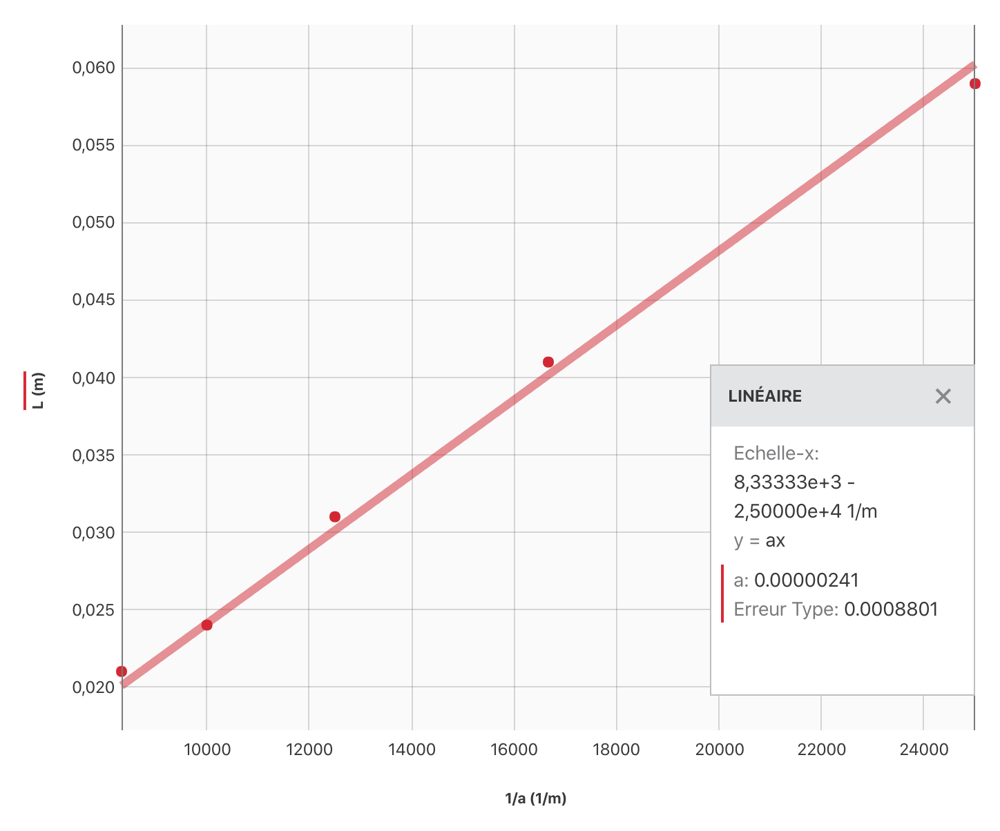
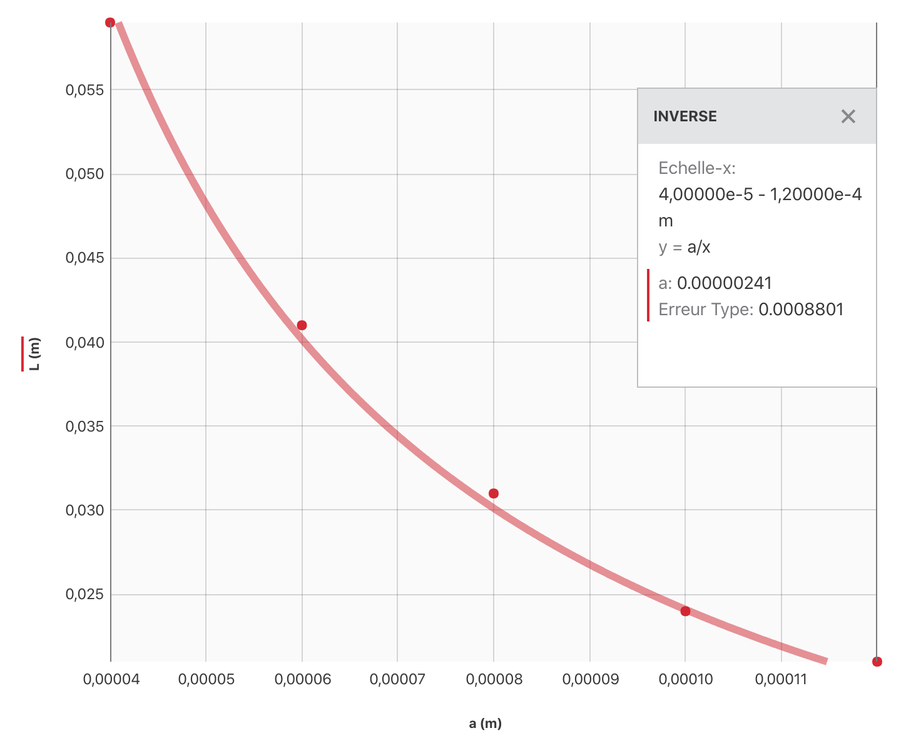

Activité expérimentale
Indications pour le travail à la maison
-
Question 2 : Pas faisable bien évidemment.
-
Question 3 : On mesure une largeur de tache centrale égale à $L_1 = \pu{5,8 cm}$ pour une distance de l’écran $D=\pu{1,80 m}$.
-
Question 4 : Chercher le nouveau protocole. La nouvelle valeur de la largeur de la tache centrale est $L_2 = \pu{5,9 cm}$ pour une distance de l’écran $D=\pu{1,80 m}$.
-
Question 8 : Valeurs possible à utiliser pour poursuivre :
| $a (\pu{m})$ | $ L(m) $ |
|---|---|
| $\pu{4,00000e-5}$ | $\pu{0,059}$ |
| $\pu{6,00000e-5}$ | $\pu{0,041}$ |
| $\pu{8,00000e-5}$ | $\pu{0,031}$ |
| $\pu{1,0000e-4}$ | $\pu{0,024}$ |
| $\pu{1,2000e-4}$ | $\pu{0,021}$ |
Utiliser le tableur grapheur Graphical Analysis de Vernier1.
Corrigé
Réponses aux questions
1. L’angle $\theta$ est fixé par le phénomène de diffraction. Plus l’écran est loin de l’objet diffractant plus grande est la tache de diffraction. Il est donc préférable de choisir $D=\pu{1,80 m}$.
2. Pas faisable à la maison.
3.
-
D’après les données, on en déduit que $L_1 = \pu{5,8 cm}$.
-
Si une seule mesure avait été effectuée, on aurait utilisé $$ U(L_1) = \dfrac{2\times \text{Valeur Plus Petite Graduation}}{\sqrt{12}} $$ comme indiqué dans le chapitre 0,2.
-
En fait, deux mesures sont effectuées, on doit donc utiliser l’expression $$ U(L_1) = \sqrt{2\, \left(\dfrac{2\times \text{Valeur Plus Petite Graduation}}{\sqrt{12}}\right)^2} $$ comme indiqué dans le chapitre 0,2.
-
La règle est manifestement graduée jusqu’au millimètre, donc
$U(L_1) = \sqrt{2 \times \left(\dfrac{2\times \pu{0,1 cm}}{\sqrt{12}}\right)^2} = \pu{8,2e-2 cm}$. -
Finalement, $L_1 = \pu{(5,80 \pm 0,09) cm}$.
4. Pour augmenter la précision avec le même instrument de mesure, il faut mesurer des longueurs plus grandes. Par exemple, on peut mesurer la distance entre les extrémités des 3 premières taches lumineuses (la centrale et les deux premières). D’après le document 3, cette distance $L’$ est égale à $L’ = 2L_2$ (l’indice 2 ici permet juste de ne pas confondre les deux résultats de $L$).
Expérimentalement, on détermine que $L’ = \pu{11,8 cm}$, donc $L_2 = \pu{5,9 cm}$.
$U(L_2) = \dfrac{U(L_1)}{2}$ (la précision est deux fois grande), donc $U(L_2) = \dfrac{\pu{8,2e-2 cm}}{2} = \pu{4,1e-2 cm}$.
Finalement $L_2 = \pu{(5,90 \pm 0,05) cm}$.
5. $\dfrac{U(L_1)}{L_1} = \dfrac{\pu{8,2e-2 cm}}{\pu{5,8 cm}} = \pu{1,4e-2}$, soit 1,4 % alors que $\dfrac{U(L_2)}{L_2} = \dfrac{\pu{4,1e-2 cm}}{\pu{5,9 cm}} = \pu{0,69e-2}$, soit 0,69 %.
La précision a bien été doublée.
6. L’étude du montage, sur le document 3, permet d’écrire que $\tan \theta = \dfrac{L/2}{D} = \dfrac{L}{2D}$. Comme $D \gg L$, l’angle $\theta$ reste toujours petit et $\tan \theta \approx \theta$. On peut conclure que $\theta = \dfrac{L}{2D}$.
7. Le phénomène de diffraction se caractérise par la relation suivante entre $\lambda$, la longueur d’onde de l’onde sinusoïdale, et $\theta$ le demi-angle au sommet de l’extrémité de la tache centrale : $\theta \approx \dfrac{\lambda}{a}$ où $a$ est la dimension de l’ouverture.
Comme parallèlement $\theta = \dfrac{L}{2D}$ (cf. question 6.), $\dfrac{\lambda}{a} = \dfrac{L}{2D} \Leftrightarrow L = \dfrac{2D\lambda}{a}$.
8. Graphique + modélisation :

On a modélisé les données par la droite d’équation : $L = k\times \dfrac{1}{a}$ avec $k = \pu{2,41e-6 m2}$.
Attention à l’unité de k !
Pourquoi ne pas avoir tracé $L = f(a)$ mais $L = g(\dfrac{1}{a})$ ?  On constate, sur le graphique, que la relation n’est pas linéaire. La modélisation d’un tel graphique « à la main » est impossible. Bien sûr, à l’aide d’un ordinateur, on trouve bien la même modélisation.
9.
- Expression théorique (question 7.) : $L = \dfrac{2D\lambda}{a}$ ;
- Résultat de la modélisation (question 8.) : $L = \dfrac{k}{a}$ avec $k = \pu{2,41e-6 m2}$.
Par identification on en déduit que $2D\lambda = k \Leftrightarrow \lambda = \dfrac{k}{2D}$.
A.N. $\lambda = \dfrac{ \pu{2,41e-6 m2} }{2 \times \pu{1,80 m}} = \pu{6,695e-7 m}$. - $L = \pu{(5,90 \pm 0,05) cm}$. Combien vaut $U(D)$ ?
$D = \pu{1,80 m}$, la dernière graduation est $\pu{0,01 m}$ (aucune précision sur la qualité du banc optique dans l’énoncé !), donc $U(D) = \sqrt{2 \times \left(\dfrac{2\times \pu{0,01 m}}{\sqrt{12}}\right)^2} = \pu{8,2e-3 m}$ et $D = \pu{(1,800 \pm 0,009) m}$. - Finalement $U(\lambda) = \pu{6,69e-7 m} \times \sqrt{ \left( \dfrac{0,009}{1,800} \right)^2 + \left( \dfrac{0,05}{5,90} \right)^2 } = \pu{6,6e-9 m} $ et $\lambda = (670 \pm 7) nm$.
10. Chaque branche produit une figure de diffraction sur un axe perpendiculaire à l’axe du fil. Ainsi, pour une araignée à trois bras, on obtiendra une figure de diffraction à 6 branches. Pour une araignée à 4 bras, on obtiendra une figure de diffraction à 4 branches. Pour une araignée à 6 bras, on obtiendra une figure à 6 branches.
11. Le nombre de branches d’une étoile observée à travers un télescope dépend du nombre de bras qui supportent le miroir secondaire du télescope (araignée) et du phénomène de diffraction de la lumière. Chaque bras produit une figure de diffraction selon un axe perpendiculaire à l’axe du bras.
-
C’est celui que l’on utilisera en classe. Il existe des versions pour tous les systèmes d’exploitation. ↩︎